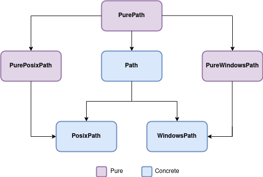

we will start of with learning how to work with paths in python.
what is path?
very simple.
its like navigating around your computer in directories.
In the old days in python this was very hard to do.
it had to do that different operating systems had different path descriptors.
the module we used back then to work with paths was os module.
but we can forget thet for now.
Cause the Python foundation created a built-in module called pathlib that helps us work with paths in a platform-independent way.
in the old days of python we used the os module to work with paths.
but over the years this module has started to show its age.
Example of the old days:
import os
dir_path = "/home/user/documents"
files = [os.path.join(dir_path, f) for f in os.listdir(dir_path) if os.path.isfile(os.path.join(dir_path, f)) and f.endswith(".png")]
this is a bit hard to read and understand. and the "list comprehension" with the variable files is a bit hard to read.
and also we haven't discussed that (comes in advanced Python)
so this code reveals several disadvantages of using the os module:
- The code is not very readable.
- The code is very long.
- it assumes knowledge of list comprehension and thats an advanced topic.
- and lastly it treats the path as a string. and thats error prone.
enough about the os module lets move on to the pathlib module.
here is example of using pathlib
from pathlib import Path
dir_path = "/home/user/documents" # We can use forward slashes in paths
# Create a path object
directory = Path(dir_path) # path knows how to translate dir_path to a windows/linux/macos path
# Find all png files inside a directory
files = list(directory.glob("*.png"))
that looks way easier right?
lets find out the path to our current file that we are working in.
from pathlib import Path # <---- from the module pathlib we import the object/class Path
p = Path(__file__) # <---- we create a Path object with the __file__ attribute
print(p)
for me it will shows this then.
/Users/nielsvanhooij/git/python_cursus/test_app.py
Pathlib creates a path to this file by putting this particular script in a Path object.
When you create a Path objects (Path/PurePath. underwater it creates two different objects/classes depending on the operating system you are using.
i have an image that will help

so the 2 objects created are a Path object and a concrete Path object. based on your OS. you dont need to do anything for this
- WindowsPath <--- windows
- PosixPath <--- linux/macOS
in our earlier example we used Path.
but we could also have done:
from pathlib import PurePath # <---- from the module pathlib we import the object/class Path
p = PurePath(__file__) # <---- we create a Path object with the __file__ attribute
print(p)
both examples provide the same result.
but when do i use what??
Use Path when:
Use PurePath when:
so if dont need to create or acces files. its safer to use PurePath just to get the path string.
from pathlib import Path
# Current directory
cwd = Path.cwd()
# Home directory
home = Path.home()
# Absolute path from string
abs_path = Path("/usr/local/bin")
# Relative path from string
rel_path = Path("documents/projects")
# From multiple parts
path_parts = Path("documents", "projects", "report.txt")
# Current file
current_file = Path(__file__) # Works in scripts, not interactive shells
Path objects have many useful properties to access different parts of the path:
from pathlib import Path
path = Path("/home/user/documents/report.txt")
path.name # 'report.txt' (the final path component)
path.stem # 'report' (name without suffix)
path.suffix # '.txt' (file extension)
path.suffixes # List of extensions: ['.tar', '.gz'] for 'archive.tar.gz'
path.parent # Path('/home/user/documents')
path.parents # Iterable of all parents in ascending order
path.parts # ('/', 'home', 'user', 'documents', 'report.txt')
path.drive # Drive letter (Windows) or '' (POSIX)
path.root # Root directory ('/' on POSIX, 'C:\\' on Windows)
path.anchor # Drive + root
path.parents # returns a iterable. an iterable is a datacollection which can be for looped over.
for x in path.parents:
print(x)
Pathlib makes path manipulation easy and intuitive:
from pathlib import Path
path = Path("/home/user/documents/report.txt")
# Joining paths (with the / operator)
new_path = Path("documents") / "projects" / "report.txt"
# Creating a sibling path
sibling = path.with_name("report2.txt")
# Changing the suffix/extension
pdf_version = path.with_suffix(".pdf")
# Resolving a path (eliminating symlinks, .. references)
absolute_path = path.resolve()
# Making a path relative to another
rel_to_home = path.relative_to(Path.home())
# Normalizing a path
normalized = path.expanduser().resolve()
One of the biggest advantages of Path objects is built-in filesystem operations:
from pathlib import Path
path = Path("/home/user/documents/report.txt")
# File existence
if path.exists():
print("Path exists!")
# File type checking
path.is_file() # Is it a regular file?
path.is_dir() # Is it a directory?
path.is_symlink() # Is it a symbolic link?
path.is_socket() # Is it a socket?
path.is_fifo() # Is it a named pipe?
path.is_block_device() # Is it a block device?
path.is_char_device() # Is it a character device?
# File attributes
path.stat() # Return stat information
path.owner() # Return file owner
path.group() # Return file group
path.lstat() # Return stat without following symlinks
# Permissions
path.chmod(0o755) # Change permissions
# File/directory creation
path.mkdir() # Create a directory
path.mkdir(parents=True, exist_ok=True) # Create directory and parents if needed
path.touch() # Create file or update timestamp
# Deletion
path.unlink() # Delete a file
path.unlink(missing_ok=True) # Don't error if file doesn't exist
path.rmdir() # Delete an empty directory
Pathlib objects have built-in methods for file I/O:
from pathlib import Path
path = Path("/home/user/documents/report.txt")
# Reading
text = path.read_text(encoding="utf-8") # Read text file
binary = path.read_bytes() # Read binary file
# Writing
path.write_text("Hello, world!", encoding="utf-8") # Write text file
path.write_bytes(b"Binary data") # Write binary file
i personally do not write files with Pathlib. i use another python method.
but its good to know that you can do it with Pathlib.
i will show the other method that is way more common to read files.
Working with directories is also straightforward:
from pathlib import Path
path = Path("/home/user/documents/")
# Iterating through directory contents
for item in path.iterdir():
print(item)
# Searching with glob patterns
for python_file in path.glob("**/*.py"): # Recursive
print(python_file)
for text_file in path.glob("*.txt"): # Current directory only
print(text_file)
# Specific patterns with rglob (recursive glob)
for image in path.rglob("*.png"):
print(image)
from pathlib import Path
path = Path("/home/user/documents/")
def find_files(path, pattern):
"""Find all files matching pattern recursively."""
return list(Path(path).rglob(pattern))
python_files = find_files("/project", "*.py")
from pathlib import Path
path = Path("/home/user/documents/")
def find_files(path, pattern):
"""Find all files matching pattern recursively."""
return list(Path(path).rglob(pattern))
def count_lines(files):
"""Count total lines in multiple files."""
return sum(len(path.read_text().splitlines()) for path in files)
total_lines = count_lines(find_files("/project", "*.py"))
import datetime
from pathlib import Path
def timestamped_file(directory, base_name, extension):
"""Create a timestamped filename."""
timestamp = datetime.datetime.now().strftime("%Y%m%d_%H%M%S")
return Path(directory) / f"{base_name}_{timestamp}{extension}"
log_file = timestamped_file("/logs", "app", ".log")
from pathlib import Path
def ensure_dir(path):
"""Ensure a directory exists."""
path = Path(path)
path.mkdir(parents=True, exist_ok=True)
return path
config_dir = ensure_dir(Path.home() / ".config" / "myapp")
from pathlib import Path
# Windows paths can use forward or backward slashes
win_path = Path("C:/Users") / "Username" / "Documents"
win_path2 = Path(r"C:\Users\Username\Documents") # Both work!
# Windows-specific
win_path.drive # 'C:'
from pathlib import Path
path = Path("/home/user/documents/")
# Convert path to string
str_path = str(path)
# Convert path to POSIX format (Unix-style)
posix_str = path.as_posix() # Uses forward slashes
# Convert to URI format
uri = path.as_uri() # 'file:///home/user/document.txt'
Path.home() / "documents" / "file.txt").with_suffix(".md").resolve()/ operator instead of string concatenation\\ or /)with_name and with_suffix - Instead of string manipulationparents for directory traversal - Instead of hardcoding ../..